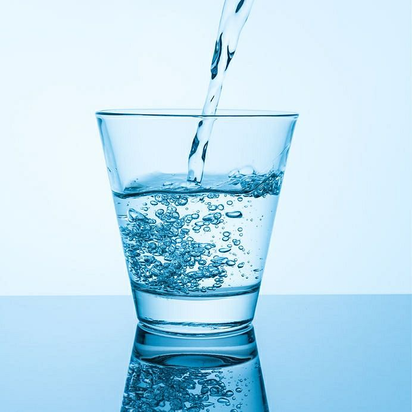
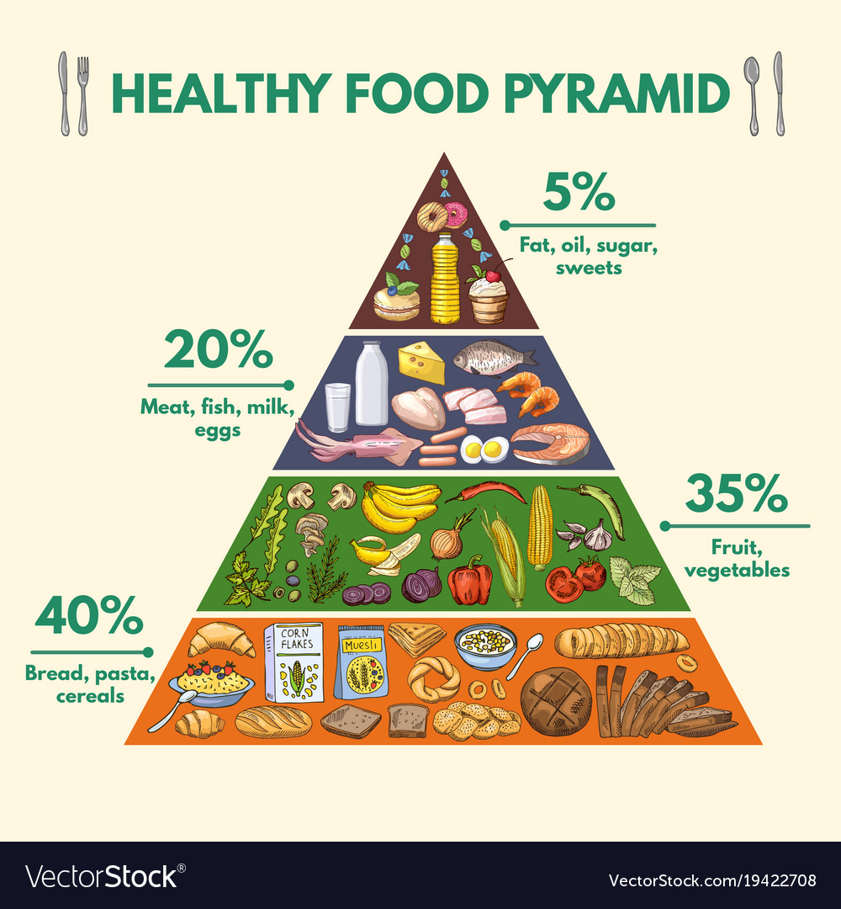

Woda zdrowia doda
Woda to naturalne środowisko dla przebiegu różnych reakcji chemicznych oraz
wszelkich procesów życiowych zachodzących w komórkach naszego organizmu.
Jej zasługą jest to, że niezwykle ważne funkcje
biologiczne, fizjologiczne i chemicznie przebiegają prawidłowo.
Przedstawienie wszystkich zadań, jakie spełnia woda dla podtrzymania naszego życia, jest rzeczą niezmiernie trudną, ale spróbujmy krótko opisać jej rolę w naszym codziennym życiu.

Co to jest Piramida Żywienia?
Piramida Żywienia jest ilustracją przedstawiającą zalecany przez specjalistów sposób odżywiania.
Na jednym obrazku streszcza najważniejsze zasady komponowania codziennego jadłospisu.
W Polsce Piramida Żywienia jest publikowana przez Instytut Żywności i Żywienia w Warszawie.
W innych krajach można spotkać inne ilustracje – przykładem może być piramida harwardzka.
Piramida w swojej podstawie zawiera aktywności oraz żywność, która jest
podstawą zdrowego stylu życia i warto zwiększać ich udział na swoim talerzu.
Czym wyższy szczebel piramidy – tym zalecana ilość żywności jest mniejsza.
Witaminy
Witaminy należą do składników odżywczych, bez których organizm
człowieka nie może właściwie funkcjonować, a których, poza pewnymi wyjątkami, sam nie syntetyzuje.
Witaminy wpływają na rozwój, stan zdrowia i wydolność organizmu.
Muszą być dostarczone organizmowi z codzienną dietą.
Przy zbyt małym spożyciu witamin mogą się pojawić zakłócenia w funkcjonowaniu organizmu zwane
hipowitaminozami, natomiast zespół chorobowy wywołany głębokim i długotrwałym
niedoborem witamin to awitaminoza. Nadmiar wprowadzonych do organizmu witamin, zwany
hiperwitaminozą, wywołuje niepożądane skutki zdrowotne w wyniku toksycznego działania zbyt dużej ilości
określonej witaminy i może przyczyniać się do wystąpienia specyficznych zaburzeń w stanie zdrowia.
Suplementy diety
Niemal każdy z nas stosował lub stosuje suplementy diety.
Często zdarza się, że nie konsultujemy się z lekarzem i zaczynamy „leczenie” na własną rękę.
Cudzysłów („leczenie”) nie jest przypadkowy, bowiem tego typu preparaty tylko i wyłącznie podszywają się pod prawdziwe leki.
Jak wobec tego odnaleźć się w gąszczu tych preparatów i oddzielić wiarygodne informacje od tych wątpliwych?
Oto kilka wskazówek, które pomogą nam właściwie i rozsądnie korzystać z suplementów diety.
Słodycze
Słodycze są uwielbiane nie tylko przez dzieci, ale także przez dorosłych.
Niestety, ta przyjemność może nas wiele kosztować. Słodycze zawierają bowiem cukry
proste, które negatywnie wpływają na nasze zdrowie, na pracę narządów i układów, w szczególności
układu trawiennego.
Słodycze w diecie są wszechobecne i niewiele robimy, by je wyeliminować, tłumacząc się, że nie
mamy czasu na przygotowanie śniadania czy spożycie wartościowego lunchu. Dlaczego zatem sięgamy po słodycze?
Czy brak czasu na normalne posiłki to jedyny powód?
Oto dlaczego, zdaniem naukowców, ludzie chętniej wybierają słodycze niż jakikolwiek inny rodzaj pokarmu.
Używki
Używki to nic innego jak substancje, które nie mają żadnych właściwości odżywczych.
Pobudzają one organizm człowieka poprzez oddziaływanie na ośrodkowy układ nerwowy.
Tak naprawdę używkami możemy nazwać także kawę oraz herbatę.
Jednak używki to również bardziej szkodliwe substancje, takie jak:
papierosy, narkotyki, alkohol oraz dopalacze.
Przykłady używek mogą być naprawdę różne.
Niewiele osób wie, że używką możemy nazwać także napój energetyzujący. Używki najczęściej przyjmujemy w celach rekreacyjnych.
Zazwyczaj chcemy wykorzystać właściwości konkretnej substancji, nie zdając sobie sprawy ze skutków ubocznych
związanych z ich spożywaniem. Nawet gałka muszkatołowa, czyli powszechnie znana i używana
przyprawa, może działać psychoaktywnie. Wszystko za sprawą zawartego w niej związku o nazwie mirystycyna.
Za używki możemy uznawać również leki lub narkotyki, które w mniejszym lub większym stopniu zmieniają stan
świadomości człowieka.